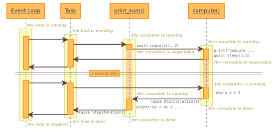

由于才开始写博客，之前都是写笔记自己看，所以可能会存在表述不清，过于啰嗦等各种各样的问题，有什么疑问或者批评欢迎在评论区留言。
如果你初次接触协程，请先阅读上一篇文章初识asyncio协程对asyncio有个初步的认识。
参照上一篇初识asyncio协程我们了解到了任务对象是对协程的一种封装，其中包含各种状态，如阻塞状态（suspended），运行状态（running），完成状态（done）；
1、创建任务对象的三种方式
第一种：loop.create_task(xxx)
第二种：asyncio.ensure_future(xxx)
第三种：asyncio.create_task(xxx)
其实第三种方法内部也是用的第一种方法，不过需要注意的是此方法在创建任务前需要一个已运行的事件循环，不然会抛出RuntimeError:no running event loop
2、添加回调
import asyncio
async def get_url(url):
print('start get_url')
await asyncio.sleep(2)
print('end get_url')
return 'Joshua'
def callback(future): # 回调函数
print('Hello {}'.format(future.result()))
if __name__=="__main__":
loop = asyncio.get_event_loop()
task = loop.create(get_url('https://www.baidu.com'))
task.add_done_callback(callback) # 添加回调
loop.run_until_complete(task)3、向回调函数传递参数
from functools import partial
# partial(偏函数)可以把函数包装成另外一个函数
import asyncio
async def get_url(url):
print('start get_url')
await asyncio.sleep(2)
print('end get_url')
return 'Joshua'
def callback(url,future):
# 注意：要想向回调函数传递参数需要将参数放在future前面
print('Hello {}'.format(future.result()))
if __name__=="__main__":
loop = asyncio.get_event_loop()
task = loop.create(get_url('https://www.baidu.com'))
# 在传递前需要先用partial将函数封装成另外一个函数
task.add_done_callback(partical(callback,'https://www.baidu.com'))4、task取消()
用于请求取消Task对象，这将会再下一轮事件循环中抛出CanceledError;
请求取消：task.cancel()
判断是否取消：cancelled()
判断是否结束：`done()`
举个例子，如下
import asyncio
async def a():
print('执行a()')
await asyncio.sleep(3)
print('执行a()完成')
async def b():
print('执行b()')
await asyncio.sleep(2)
print('执行b()完成')
if __name__ == '__main__':
loop = asyncio.get_event_loop()
task1 = loop.create_task(a())
task2 = loop.create_task(b())
task1.cancel() # 取消task1
loop.run_until_complete(asyncio.gather(task1, task2))
# 运行结果如下
>>> 执行b()
>>> Traceback (most recent call last):
... # 省略Traceback中的部分
>>> concurrent.futures._base.CancelledError
# 如果不想因为抛出异常而中断运行，可以在`gather`中设置`return_exception=True`
# 如果设置`return_exception=True`,这样异常会和成功的结果一样处理，并聚合至结果列表，那么运行结果将如下:
>>> 执行b()
>>> 执行b()完成可以看到a()并没有执行。
5、shield屏蔽取消
asyncio.shield(aw, **, loop=None)，用于保护一个可等待对象被取消
我们先将上面取消的例子修改一下，如下：
import asyncio
async def a():
print('执行a()')
await asyncio.sleep(3)
print('执行a()完成')
async def b():
print('执行b()')
await asyncio.sleep(2)
print('执行b()完成')
def c():
loop = asyncio.get_event_loop()
task1 = loop.create_task(a())
task1 = asyncio.shield(task1) # 设置屏蔽取消操作
task2 = loop.create_task(b())
task1.cancel()
loop.run_until_complete(asyncio.gather(task1, task2, return_exceptions=True))
c()
# 运行结果如下
>>> 执行a()
>>> 执行b()
>>> 执行b()完成看到这里依然被取消了，小伙伴们肯定都是一（沙）脸（雕）懵（博）逼（主），但是这真不怪我啊，它确实是这样输出的，那么为什么会这样呢？我们先看下shield（）的源码，如下：
def shield(arg, *, loop=None):
inner = ensure_future(arg, loop=loop) # 首先创建一个内部的Task 赋给inner
if inner.done(): # 如果内部的Task执行完毕则返回inner
# Shortcut.
return inner
loop = futures._get_loop(inner)
outer = loop.create_future() # 在事件循环上创建一个外部的Task
def _done_callback(inner): # 回调函数，在inner执行完毕后回调
if outer.cancelled(): # 如果外部Task被取消
if not inner.cancelled(): # 如果内部Task没被取消
# Mark inner's result as retrieved.
inner.exception() # 根据注释的意思，内部Task的结果会被标记为已检索
return
if inner.cancelled(): # 如果内部的Task取消了，则外部的Task也将取消
outer.cancel()
else:
exc = inner.exception() # 返回内部Task的异常
if exc is not None: # 如果存在异常，则外部Task的异常被设置为内部Task的异常
outer.set_exception(exc)
else: # 否则将外部Task结果设置为内部Task的结果
outer.set_result(inner.result())
inner.add_done_callback(_done_callback)
return outer # 返回外部Task由上面源码可以看到，真正运行的是内部的Task（inner），事件循环上的外部Task的一切都来自于内部Task，而我们取消的则是事件循环上的外部Task，对内部的Task不产生任何影响，所以当事件循环上所有Task执行完成就退出了，而内部Task仍然在运行着，这就导致虽然我们设置了屏蔽取消然而还是被取消了,那怎么解决呢？
有如下两种方法：
让被取消的Task耗时小于正常Task的耗时，也就是把要被取消的a()协程模拟阻塞延时设置得比b()协程小，这样使被屏蔽取消的协程的内部Task比事件循环中其他正常Task执行完成得早；如下：
async def a():
print('执行a()')
await asyncio.sleep(1) # 由原来的3改为1，使其小于b()的延时
print('执行a()完成')
async def b():
print('执行b()')
await asyncio.sleep(2)
print('执行b()完成')执行结果如下：
>>> 执行a()
>>> 执行b()
>>> 执行a()完成
>>> 执行b()完成可以看到这下a()协程执行完成了。
让事件循环持续运行，也就不会因为事件循环上的Task执行完成，程序退出导致被屏蔽取消的协程的内部Task未能执行完成；如下：
import asyncio
import time
async def a():
print('执行a()')
await asyncio.sleep(3)
print('执行a()完成')
async def b():
print('执行b()')
await asyncio.sleep(2)
print('执行b()完成')
if __name__ == '__main__':
loop = asyncio.get_event_loop()
task1 = loop.create_task(a())
task2 = loop.create_task(b())
loop.run_forever()
# 输出如下
>>> 执行a()
>>> 执行b()
>>> 执行b()完成
>>> 执行a()完成6、任务对象的其他方法（粘贴自官方文档）
result()
返回 Task 的结果。如果 Task 对象 已完成，其封包的协程的结果会被返回 (或者当协程引发异常时，该异常会被重新引发。)如果 Task 对象 被取消，此方法会引发一个 CancelledError 异常。如果 Task 对象的结果还不可用，此方法会引发一个 InvalidStateError 异常。
exception()
返回 Task 对象的异常。如果所封包的协程引发了一个异常，该异常将被返回。如果所封包的协程正常返回则该方法将返回 None。如果 Task 对象 被取消，此方法会引发一个 CancelledError 异常。如果 Task 对象尚未 完成，此方法将引发一个 InvalidStateError 异常。
remove_done_callback(callback)
从回调列表中移除 callback 指定的回调。此方法应该仅在低层级的基于回调的代码中使用。要了解更多细节请查看 Future.remove_done_callback() 的文档。
get_stack(**, limit=None*)
返回此 Task 对象的栈框架列表。如果所封包的协程未完成，这将返回其挂起所在的栈。如果协程已成功完成或被取消，这将返回一个空列表。如果协程被一个异常终止，这将返回回溯框架列表。框架总是从按从旧到新排序。每个被挂起的协程只返回一个栈框架。可选的 limit 参数指定返回框架的数量上限；默认返回所有框架。返回列表的顺序要看是返回一个栈还是一个回溯：栈返回最新的框架，回溯返回最旧的框架。(这与 traceback 模块的行为保持一致。)
print_stack(**, limit=None, file=None*)
打印此 Task 对象的栈或回溯。此方法产生的输出类似于 traceback 模块通过 get_stack() 所获取的框架。limit 参数会直接传递给 get_stack()。file 参数是输出所写入的 I/O 流；默认情况下输出会写入 sys.stderr。
classmethod all_tasks(loop=None)
返回一个事件循环中所有任务的集合。默认情况下将返回当前事件循环中所有任务。如果 loop 为 None，则会使用 get_event_loop() 函数来获取当前事件循环。This method is deprecated and will be removed in Python 3.9. Use the asyncio.all_tasks() function instead.
classmethod current_task(loop=None)
返回当前运行任务或 None。如果 loop 为 None，则会使用 get_event_loop() 函数来获取当前事件循环。
为了更好的理解后面的并发执行，所以现在为我们先了解下协程的调用原理，先举个协程嵌套的例子：
import asyncio
import time
async def compute(x,y):
await asyncio.sleep(1)
return x+y
async def print_sum(x,y):
reuslt = await compute(x,y)
print(result)
if __name__ == "__main__":
start = time.time()
loop = asyncio.get_event_loop()
loop.run_until_complete(print_sum(1,2))
loop.close()
print('Cost:{}'.format(time.time()-start))
#输出如下
>>> 3
>>> Cost:1.0007200241088867
下面是这个例子的时序图：

创建一个Event Loop事件循环，调用run_until_complete启动事件循环并为print_sum创建一个任务对象Task，Event Loop进入running状态，Task进入pending状态；
Task驱动运print_sum运行到await compute(x,y)转向调用子协程compute，print_sum进入
suspended状态，子协程compute进入running状态；
compute运行到await asyncio.sleep(1)发生阻塞耗时，进入suspended状态，此时直接与Task沟通，与Task打通一条通道（子协程与调用方Task），可以粗略的理解为类似子线程与进程沟通；
这样做的好处在于能够保证print_sum中是同步进行，而整体程序是异步运行，后面有例子解释这个问题。
Task与子协程沟通后转向与Event Loop沟通，Event Loop中没有其他的Task便只能等待阻塞操作完成（睡眠1秒）；
在等待阻塞耗时操作完成后，Event Loop通过Task与子协程compute的通道唤醒compute，此时compute进入running状态;
compute执行下一步的代码return x+y，从running状态转为done状态，同时抛出StopIteration异常，并且携带return的结果；
print_sum捕获compute抛出的异常，并从其中获取compute返回的结果，此时print_sum由suspended状态转为running状态，执行下一步的代码print(result)
在print_sum执行完print后由running状态转为done状态，同时抛出StopIteration异常；
Task捕获到print_sum抛出的异常后由runing状态转为done状态；
此时Event Loop进入stopped状态；
举个例子解释第3条：
import asyncio
import time
async def compute(x,y):
await asyncio.sleep(1)
return x+y
async def print_sum(x,y):
result = await compute(x,y)
print(result)
if __name__ == "__main__":
start = time.time()
loop = asyncio.get_event_loop()
tasks = [print_sum(1,2),print_sum(1,2)] # 创建两个协程对象
loop.run_until_complete(asyncio.gather(*tasks)) # 同时执行两个协程对象
loop.close()
print('Cost:{}'.format(time.time()-start))
#输出如下
>>>3
>>>3
>>>Cost:1.0004866123199463由上述例子可以看出在执行多个协程对象的时候并没有延长运行时间，实际上asyncio.gather的部分作用就是把协程对象转为Task并把它们注册到事件循环上。此例子在上述时序图解释中的第3，4步并没有等待阻塞，而是转向调用另一个print_sum的Task，是异步操作，所以理论上来说这种方法即使执行1000个协程对象依然只耗时1秒钟。
再来看一个例子：
import asyncio
import time
async def compute(x,y):
print('执行compute')
await asyncio.sleep(1)
return x+y
async def print_sum(x,y):
result1 = await compute(x, y) # 调用子协程
print(result1)
result2 = await compute(x, y) # 调用子协程
print(result2)
if __name__ == "__main__":
start = time.time()
loop = asyncio.get_event_loop()
loop.run_until_complete(print_sum(1,2)) # 同时执行两个协程对象
loop.close()
print('Cost:{}'.format(time.time()-start))
# 输出如下
>>> 执行compute
>>> 3
>>> 执行compute
>>> 3
>>> Cost:2.0158169269561768可以看到此例总体运行时间为2秒，验证在print_sum中是同步运行的，所以两次执行子协程耗时加倍，如果想让其依旧是1秒完成怎么修改？
自然是将同步操作转为异步操作，也就是让协程对象转为任务对象（Task）了，如下：
import asyncio
import time
async def compute(x,y):
print('执行compute')
await asyncio.sleep(1)
return x+y
async def print_sum(x,y):
task1 = asyncio.create_task(compute(x, y))
task2 = asyncio.create_task(compute(x, y))
await task1
print(task1.result())
await task2
print(task2.result())
if __name__ == "__main__":
start = time.time()
loop = asyncio.get_event_loop()
loop.run_until_complete(print_sum(1,2))
loop.close()
print('Cost:{}'.format(time.time()-start))
# 输出如下
>>> 执行compute
>>> 执行compute
>>> 3
>>> 3
>>> Cost:1.0004889965057373在此有个坑，大家在写的时候注意避开，如下：
async def print_sum(x,y):
await asyncio.create_task(compute(x, y))
await asyncio.create_task(compute(x, y))
# 这样写依然是同步运行，要将生成的对象赋给一个变量再进行await，即上个例子那样在上面协程调用原理的几个实例中我们其实已经接触到了部分并发的知识，下面来详细讲解一下asyncio的并发。
asyncio并发的几种实现方式：
asyncio.gather(*aws, loop=None, return_exceptions=False)`
aws：可等待对象（协程，Task，Future），如果某个可等待对象是协程，那么asynico.gather内部会自动将其转换为Task并加入事件循环。如果所有可等待对象都成功完成，结果将一个由所有返回值聚合的列表，顺序与aws顺序一致。return_exceptions当其为默认值False的时候，如果aws中的可等待对象被取消，那么会抛出一个CancelledError结束程序运行；如果将其设为True的时候则不抛异常，程序正常运行，在返回结果的列表中将此可等待对象的结果设置为concurrent.futures._base.CancelledError()asyncio.wait((aws, *, loop=None, timeout=None, return_when=ALL_COMPLETED)
aws：可等待对象，并发运行aws指定的可等待对象并阻塞线程直到满足 return_when 指定的条件；
loop：这个参数可以不用管它，根据官方文档描述其将于python3.10中被去除；
timeout：支持小数和整数，如果设置了则将被应用于控制返回之前等待的最长秒数，并不会引发TimeoutError,如果超时发生则返回未完成的Task或Future；
return_when：指定函数的返回时机条件：
FIRST_COMPLETED: 第一个可等待对象完成时返回；
FIRST_EXCEPTION：第一个异常发生时返回，如果无异常则在所有可等待对象完成时返回；
ALL_COMPLETED：默认，当所有可等待对象完成时返回
asyncio.gather和asyncio.wait的区别：
两者都用来做协程并发，其中asyncio.gather返回协程的运行结果，asyncio.wait返回两个Task/Future的列表（完成的协程和未完成的协程两个列表）；
asyncio.gather相当于全程黑盒，只告诉你协程的结果；
asyncio.gather的可以将Task分组，示例如下：
import asyncio
async def get_url(url):
print('start get_url')
await asyncio.sleep(2)
print('end get_url')
return 'Joshua'
if __name__=="__main__":
loop = asyncio.get_event_loop()
# 将url分组
group1 = [get_url('https://www.baidu.com') for _ in range(10)]
group2= [get_url('https://www.baidu.com') for _ in range(10)]
group1.cancel() # 将第一组任务取消
loop.run_until_complete(asyncio.gather(*group1,*group2))asyncio.wait会返回执行完成的和未完成的任务，你可以在其运行中做一些操作，如上面的return_when返回实际条件来控制什么时候返回，如果你想要执行的结果需要自行从完成的任务里面用result方法取；
获取返回结果的示例如下：
tasks = [Task1,Task2,Task3]
# gather的获取结果方法
results = await asyncio.gather(*tasks) # 注意此处gather方法不支持可迭代对象做参数，需要加*脱掉[]
# wait的获取结果方法
# 第一种
done,pending = await asyncio.wait(tasks) # 标准格式的wait方法
results = [task.result() for task in done]
# 第二种
await asyncio.wait(tasks)
results = [task.result() for task in tasks]